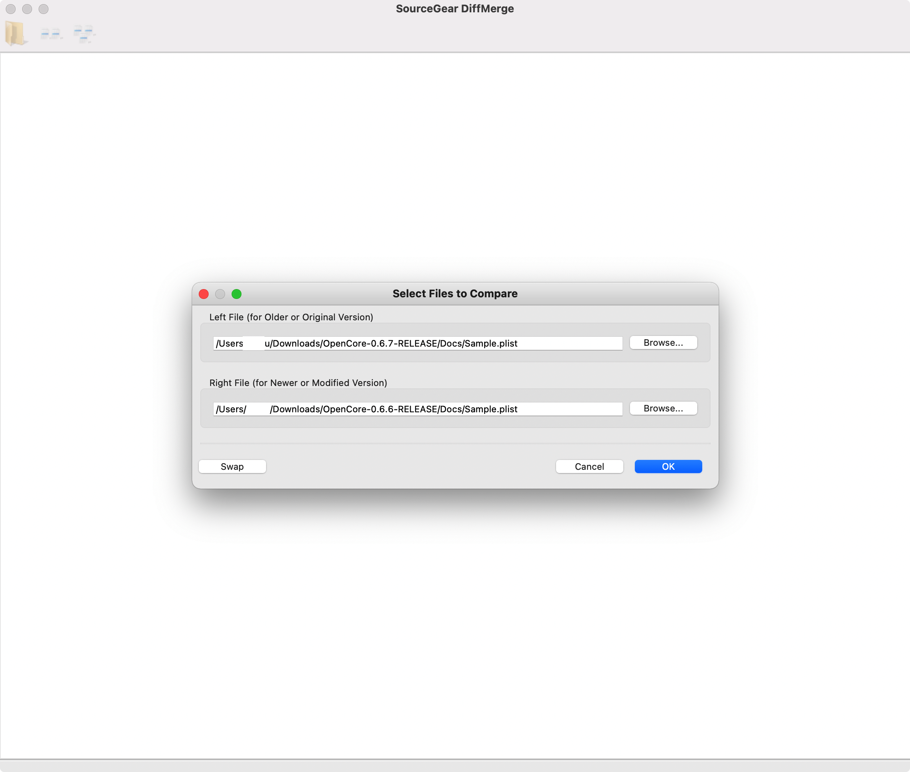

TreeviewCopyright © aleen42 all right reserved, powered by aleen42
升级OpenCore (从0.6.6 到 0.6.7)
应网友同学的怂恿，要求我录一期视频把opencore从0.6.6升到0.6.7。我本人其实不想升级的，因为0.6.7版本才刚刚出来不久，社区也没什么人升级，也没有听见什么骂娘的声音。所以现在稳定性不太好说，难道要做第一个吃螃蟹的人？我也是手欠~
视频
先看一下官方文档吧 OpenCore-Post-Install
我这边弄了一个比较简单的方法去升级，大概是这样子的原理
- 把原来的EFI拷出来，在这个基础上改
- 下载最新版的OpenCorePkg（0.6.7）， 把OpenCore-0.6.6 - Docs - Sample.plist 和 OpenCore-0.6.7 - Docs - Sample.plist比较，看看有哪些差异
- 把差异的部分写入到EFI - OC - config.plist中
- 和OpenCore Install Guide 中 config.plist的Guide对比，看看有没有新增的修改
- 检查修改后的config.plist有没有错误（可以使用自带工具，也可以使用Sanity Checker网站。后者界面更加友好
升级前准备
第一：先下载一个diff工具，我猜测大概率需要修改config.plist。所以我们肯定是在老的config.plist的基础上修改了，那么需要一个diff的工具去比较两个版本之前的差异 第二：找一个可以验证config.plist的网站。其实第一次安装的时候，就可以考虑使用Opencore Sanity Checker验证，只是第一次安装比较简单，所以就没有去验证了，而且验证的网站更新也比较慢，有时候没有问题，他说有问题，也是醉了。当然也可以使用自带的工具 OpenCorePkg - Utilities - ocvalidate
- 如果机器上有装xcode，可以用xcode自带 FileMerge ,或者使用 diffmerge, 还有一个商业的 Beyond Compare, 不过一般FileMerge和diffmerge就差不多够用了，如果家里有矿也可以买商用的吧
- OpenCore Sanity Checker
- 下载最新版的OpenCorePkg
Diff config.list

看起来就4处修改
增加了
<key>ResetTrafficClass</key> <false/>Delete
<key>KeyMergeThreshold</key> <integer>2</integer>add
<key>GopPassThrough</key> <false/>- add
<key>ActivateHpetSupport</key> <false/>
Copy Core Files
- BOOT/BOOTx64.efi
- OC/OpenCore.efi
- OC/Drivers/*.efi （你的EFI目录里的OC/Drivers/底下的所有文件都替换成最新的）
- OC/Tools/*.efi（你的EFI目录里的OC/Tools/底下的所有文件都替换成最新的）
把EFI目录放到EFI分区
- 重起
Kext是否需要更新
- 检查Kext是否需要更新